Choose a construction from the figure’s topology and the frame’s connection pattern. Preserve the visible outline, add shared connectors, and check the resulting paper geometry.
This replaces the solver-led proposal. The examples below are generated directly from polygon contours and explicit routing rules. No image fitting or combinatorial optimizer constructs these cuts. Existing routines are used only to validate, render and export them.
A picture boundary is not a closed cutting path
Cutting a whole outline in one sheet would make a loose piece. Instead, divide the outline between the two sheets and connect those portions to the frame. A visible boundary belongs to A or B. A connector through a plain region belongs to both, so crossing it changes the visible colour twice and has no net effect.
Blue: cut A onlyGreen: cut B onlyOrange dashed: cut A and B
This edge-assignment principle and the matching of opposite edges are described in Torben Mogensen’s guide, “Designing Advanced Patterns”. His letter A example also demonstrates a woven hole using shared cuts. The specific recipes and implementations below are our construction study.
Correction to the earlier study: a hole in a letter does not inherently require a cut-out piece. A suitably connected contour construction can preserve it. The failed font-fitting experiments did not establish what lettering can or cannot be woven.
Local rule: at each interior point, each sheet has degree zero or two. At the end of a shared connector, one A-only arc and one B-only arc meet it. There must be no branching cut within a sheet.
Global rule: each A path connects top to bottom, and each B path connects left to right, in compatible order. There must be no closed cutting cycle left over. Local degree checks alone do not establish this.
Geometric rule: cuts on the same sheet must not cross or touch. Leave room for paper and cutting error. Hidden routes must remain in the intended face and clear other contours.
Visible boundary = A cuts XOR B cuts
This is a boundary identity, not a resemblance score. The construction retains the original contour segments, splitting them only where a connector attaches. Shared connector segments are referenced by both sheets.
The recipe depends on more than a component count
First recover the containment forest: which closed contours bound figures, which bound holes, and which enclose further islands. Then record the frame’s ordered attachment points, the sheet assigned to each outer endpoint, and the corridors where connectors may run.
A circle, diamond and hexagon are all topological disks. They can share a recipe when their connections have the same cyclic order. Changing the number or placement of rays can change that order and require another recipe. Deep concavities and narrow necks also change the available routes, even when the component and hole counts stay the same.
Figure topology
Compatible frame contract
Construction
Status
One simple outline
Four connections, each splitting to adjacent edges
Four ordered contour arcs with alternating A/B labels; four shared connectors through the annulus.
Implemented for the radial examples; circle, diamond and hexagon.
One simple outline
Two opposite diagonal connections
Split the outline into two arcs; A takes one and B the other.
Implemented; a different frame uses a different graph.
A chain of nested outlines: ring, hole, island
Two opposite connections, with room for inward routes
Alternate outward and inward attachments around each non-leaf contour. Recurse into the next contour.
Implemented for concentric polygon examples.
Several separate components
Two connections with a clear ordered corridor
Join two-arc component blocks in series along a shared connector route.
Implemented for separated, ordered examples.
Several holes, arbitrary concavity, text
A frame with enough compatible routes and usable width
Decompose the containment forest into contour blocks; route through each face without crossings. Add lanes or use another frame contract where required.
Design direction; general routing and classification are not implemented.
Touching contours or vanishing necks
Any frame
Resolve the actual filled region and test contact/clearance explicitly before choosing a recipe.
Do not silently erase a hole or join separate features.
The four-connection demonstration uses corner-aligned rays. It is not a promise that every ray count, phase or checker density in the visual mockup supports the same construction. The frame should be generated together with the cut connections.
Eight direct constructions
The star examples keep the same outline while changing frame geometry or connectivity. The ring examples distinguish holes from nested islands. The last example deliberately fails the width check.
One silhouette · circle + four corner rays
Constructed
1 component, 0 holes · 2 + 2 cuts
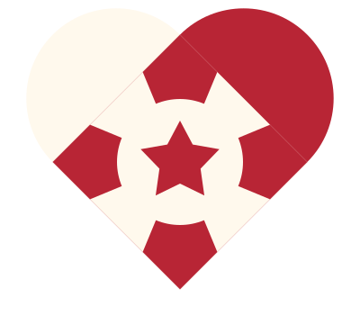
Requested contours + frame
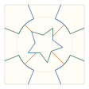
A / B / shared connections
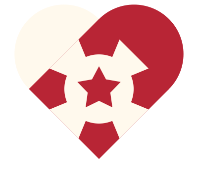
Rendered from the cutting paths
Split the silhouette into four ordered arcs. Route four shared connectors through the surrounding annulus. Each frame connection splits into one A arm and one B arm on adjacent square edges.
See the two sheets and verification
Sheet A · overlap coordinatesSheet B · overlap coordinates
Blue and green are sheet assignments, not the paper colours. In the middle diagram, orange dashed edges are cut in both sheets and cancel in the colour boundary.
The same contour topology uses a diamond-shaped frame and axis-aligned outer arms. This recipe makes four corner patches; it does not reproduce every density or phase of the earlier checker preview.
See the two sheets and verification
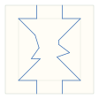
Sheet A · overlap coordinates
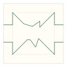
Sheet B · overlap coordinates
Blue and green are sheet assignments, not the paper colours. In the middle diagram, orange dashed edges are cut in both sheets and cancel in the colour boundary.
A / B / shared connectionsRendered from the cutting paths
Changing the frame geometry does not change the connection graph here. Its attachment points move to the hexagon; the contour arcs keep their A/B assignment.
See the two sheets and verification
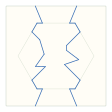
Sheet A · overlap coordinates
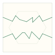
Sheet B · overlap coordinates
Blue and green are sheet assignments, not the paper colours. In the middle diagram, orange dashed edges are cut in both sheets and cancel in the colour boundary.
A / B / shared connectionsRendered from the cutting paths
A different frame contract uses two opposite diagonal connections and only one cut per sheet. Fewer cuts can mean larger, more awkward fingers; this is not a claim that it is easier to assemble.
See the two sheets and verification
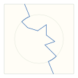
Sheet A · overlap coordinates
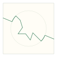
Sheet B · overlap coordinates
Blue and green are sheet assignments, not the paper colours. In the middle diagram, orange dashed edges are cut in both sheets and cancel in the colour boundary.
A / B / shared connectionsRendered from the cutting paths
The outer contour has two outward connections and two inward connections in alternating order. The inward connections meet the hole. Both sheets remain open paths; neither cuts out a closed disk.
See the two sheets and verification
Sheet A · overlap coordinates
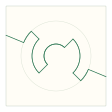
Sheet B · overlap coordinates
Blue and green are sheet assignments, not the paper colours. In the middle diagram, orange dashed edges are cut in both sheets and cancel in the colour boundary.
A / B / shared connectionsRendered from the cutting paths
Repeat that construction one level deeper. Each containment level alternates the intended colour. The island is represented by another contour, not by pasted-on paper.
See the two sheets and verification
Sheet A · overlap coordinatesSheet B · overlap coordinates
Blue and green are sheet assignments, not the paper colours. In the middle diagram, orange dashed edges are cut in both sheets and cancel in the colour boundary.
A / B / shared connectionsRendered from the cutting paths
Connect two disjoint components in order along a shared corridor. At each component, A follows one half of its outline and B the other; both follow the connector between components.
See the two sheets and verification
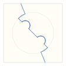
Sheet A · overlap coordinates
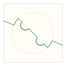
Sheet B · overlap coordinates
Blue and green are sheet assignments, not the paper colours. In the middle diagram, orange dashed edges are cut in both sheets and cancel in the colour boundary.
This has exactly the same connection topology as the wider ring. Its 1 mm gap fails the cut-clearance audit at the requested 2 mm usable-width setting. The paper-core model alone does not catch this; all relevant checks are required.
See the two sheets and verification
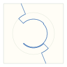
Sheet A · overlap coordinates
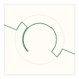
Sheet B · overlap coordinates
Blue and green are sheet assignments, not the paper colours. In the middle diagram, orange dashed edges are cut in both sheets and cancel in the colour boundary.
Path connectivity / endpoints
Pass
Curve geometry and clearance
Fail
Paper core model
pass
Independent rendered difference
0.033% · at boundary pixels
Original combined sampler audit
nonlocal_self_clearance
The implementation should be a contour compiler
Normalize the artwork. Expand strokes and font glyphs into filled outlines, apply transforms and fill rules, and resolve overlaps. Preserve components, holes and intentional contacts. Build a containment forest from vector geometry.
Select the topology/frame recipe. Use the contour relationships and the frame’s ordered endpoint labels. Each recipe states its preconditions, its connection graph and the geometry it needs. Do not choose a near-looking result from a timed search.
Embed the connections. Use straight radial bridges where they meet each contour once and remain in a clear annulus. More concave cases need routed corridors or a subdivision of the face. Keep visible source curves intact; shared bridges may bend.
Compile and verify. Trace the A and B paths. Check edge membership, degrees, opposite endpoints and cycles, then intersections, spacing, unfolded paper support, and the independently rendered result. Recheck after any editor conversion or export simplification.
Explain unsupported combinations. Offer a compatible frame, larger size, or explicit motif change with a reason. Never silently drop a dot, fill a letter hole, or reconnect two components.
Text belongs in the same topology pipeline. O has a hole, B has two, i has a separate dot, and handwriting can join letters into one component. Counts alone are insufficient: the containment and adjacency relationships matter. Font outlines can be preserved when a compatible construction and sufficient paper width exist; specialized lettering can be an optional easier-to-weave style.
What is finished here: the unwanted preview/position controls are removed; three direct construction recipes and a cut-graph compiler are implemented for the demonstrated contour classes; regression tests check the original artwork against the exported cuts. The mockup is still a composition preview. It is not yet wired to classify arbitrary icons or generate their templates.
Next engineering step: implement vector contour normalization and classification, then connect the supported recipes to the figure flow. Add general face routing and multi-hole glyphs as separate, explicitly tested cases. Test the exported pieces in paper before calling a recipe easy or recommending a weaving order.
Verification and reproducibility
Run node scripts/inverse/topology-study.mjs to regenerate this page, and node --test scripts/inverse/topology-construction.test.mjs for the dedicated checks. The construction module has no imports and no solver dependency. The output consists of ordinary heartcurves-2 cutting geometry, so the existing renderer and template exporter can consume it.
The demonstration star is a regular ten-vertex polygon, and the construction preserves its straight sides. Study circles use 128-sided polygons; the prototype is not an exact circular-arc implementation. All contours are retained as supplied to the constructor. Independent renderings at 512 × 512 differ by under 0.05% of pixels in these examples, exclusively within 0.2 mm of the visible boundary; the tests explicitly check that distance. This is raster boundary sampling, not a fitted approximation of the motif.
The curve-geometry audit is reported separately from the legacy combined audit: the latter flags one or two samples lying exactly on shared cuts in some otherwise valid cases. The tests locate those samples on the shared segments (within 0.0000001 mm); opposite traversal directions cause a floating-point cancellation disagreement there. The independent renderer cancels those shared segments correctly. The legacy failures are listed rather than relabelled as passes. Physical settings are 100 mm overlap, 2 mm usable width, 0.25 mm cutting allowance per side, and 0.2% shrink allowance: about 2.505 mm nominal spacing. The 1 mm ring deliberately fails that spacing requirement.